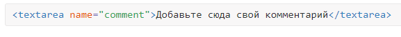
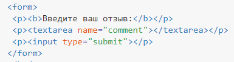

Многострочный текст
Ещё одним элементом, используемым для сбора текстовых данных, является элемент <textarea>, который предназначен для создания области, в которую можно вводить несколько строк текста. Он отличается от элемента <input> тем, что может принимать большие отрывки текста в несколько строк. В отличие от <input> в текстовом поле допустимо делать переносы строк, они сохраняются при отправке данных на сервер.
Поле для многострочного текста незаменимо для добавления комментариев к статьям, написания сообщений форума, вставки и редактирования постов в блоге и во многих других случаях, когда одной строки текста явно недостаточно.
Элемент <textarea> также содержит начальный и конечный теги, которые могут обернуть простой текст. Поскольку <textarea> принимает только один тип значения, атрибут type здесь не применим, но атрибут name по прежнему используется.
Между тегов <textarea> и </textarea> можно поместить любой текст, который будет отображаться внутри поля. Если текста нет, то поле будет изначально пустым.
Демонстрация текстовой области

Допустимые атрибуты перечислены в табл. 1.
| Атрибут | Описание |
|---|---|
| name | Имя поля, предназначено для того, чтобы обработчик формы мог его идентифицировать. |
| disabled | Блокирует поле и не отправляет данные на сервер. |
| form | Идентификатор формы для связывания поля с элементом <form>. |
| maxlength | Устанавливает максимальное число символов, которое может быть введено пользователем в текстовом поле. Когда это количество достигается при наборе, дальнейший ввод становится невозможным. |
| readonly | Блокирует поле для ввода текста. |
| autofocus | Поле получает фокус после загрузки документа. |
| required | Указывает, что поле является обязательным для заполнения. |
| placeholder | Добавляет подсказку, которая исчезает при вводе текста. |
| dirname | Имя переменной, которая отправляется на сервер и автоматически получает значение ltr (для текста слева направо) или rtl (для текста справа налево). |
| rows | Высота поля в строках текста. |
| wrap | Значение soft передаёт на сервер текст одной строкой, а hard учитывает значение cols и автоматически добавляет переносы. |
| cols | Ширина поля в символах. |
Ни один из этих атрибутов не является обязательным, поэтому простая форма для отправки текста выглядит так (пример 1).
Пример 1. Текстовое поле

Для <textarea> действуют те же ограничения, что и для <input>, а именно:
- <textarea> нельзя вкладывать внутрь ссылки <a>;
- <textarea> нельзя вкладывать внутрь кнопки <button>;
В <textarea> допустимо вставить произвольный текст и он отобразится внутри текстового поля для редактирования. При этом учитываются все пробелы, в отличие от обычного HTML (пример 2).
Пример 2. Текстовое поле с текстом
При оформлении многострочного поля применяются те же стилевые свойства, что и для однострочного текста. А именно можно изменять ширину (свойство width), высоту (height), границу (border), цвет текста и фона (color и background соответственно) и др. Пример создания текстового поля с разными характеристиками приведен в примере 3.
Пример 3. Оформление текстового поля
Все браузеры кроме Internet Explorer поддерживают изменение размера для <textarea>. Достаточно потянуть за правый нижний уголок, который по своему виду отличается от остальных. Вид в разных браузерах может несколько различаться, но общая схожесть сохраняется.
Если вам не нужно, чтобы пользователь мог менять размеры текстового поля, то добавьте свойство resize со значением none.
Как правило, размеры <textarea> задаются с помощью стилей, но если одновременно заданы атрибуты rows и cols с шириной и высотой через CSS, то стили имеют преимущество и значение атрибутов игнорируется.